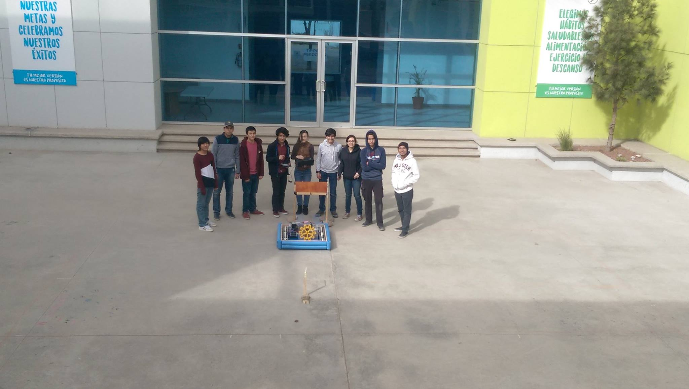

One Team One Dream
Charger is a team formed during the third quarter of the year 2016, we started as a big team but our numbers were slowly reduced as nothing seemed to be in favor to us, until an economic support was provided by Argosy, a thing that raised our hopes to the top, we had basically given up by the time we received notice of that huge help but we were still missing 1000 dollars, something that would have seen as still very hard to solve some days ago now seemed like a challenge and so by the support of our coach and the school we were able to pay off the inscription.
We had made it, we were finally in FIRST, happiness was an emotion present to us but still by the end of the year not many of us were able to celebrate the success, as only four of us were left. During the first months we could only focus on getting the documents right and raising funds ourselves, as of by our own means because of the low response coming from the enterprises, for we got the support from Argosy by November and in during the period of time of August-October we simply couldn’t see ourselves having this experience, and so as our hopes were very low and by the time we were determined enough by a challenge nothing could be talked with enterprises by that time, they were basically at the end of the year and an economic bonus is given to the workers because of it, meaning it would simply not be possible for us to partake in explaining our needs to them which could have had helped us to have more knowledge during the construction of the robot and having better equipment for both the robot and us.
After the events of the end of the year more members started to arrive, members who seemed capable and willing to generate great things. After the pieces of the robot arrived we started to observe that things would be complicated, for we had not much knowledge in the areas that were needed, as well as a lot of delays because of some faulty pieces, but after four months results were delivered in an efficient manner, of course lacking in a couple of things because of our inexperience but with proficient results in the area of power and manageability.
Right now we are in the midst of acquiring more members and trying to get sponsors in order to raise our work quality as well as how the robot works.
